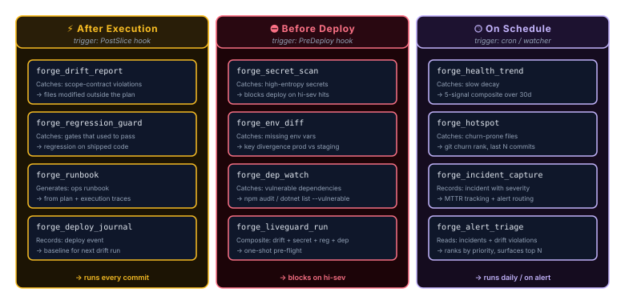

LiveGuard Tools Reference
14 post-coding intelligence tools. Each guards a different gate.
- LiveGuard is a build-time and pre/post-deploy guardrail layer. It runs in your CI / dev shell / dashboard. It looks at the codebase, the plan that built it, the dependencies, and the env config, before traffic ever sees the change.
- LiveGuard is not an APM like Datadog, New Relic, or Sentry. It does not instrument running production traffic. It does not track per-request latency, error rates, or live user sessions. Use APMs for those things and run LiveGuard alongside them, the two layers complement each other.
- The mental model: APMs answer “is the running app healthy right now?” LiveGuard answers “is what we just shipped safe to ship, and is the codebase staying within the architectural rules over time?”
Tool Index

All 14 LiveGuard tools are available as MCP tools and via REST API. Full reference per tool below.
| Tool | What It Guards | Since |
|---|---|---|
| forge_drift_report | Architecture drift vs. plan | v2.27 |
| forge_incident_capture | Incident log + MTTR tracking | v2.27 |
| forge_dep_watch | Dependency vulnerability changes | v2.27 |
| forge_regression_guard | Regression gate pass/fail history | v2.27 |
| forge_runbook | Operational runbook store | v2.27 |
| forge_hotspot | High-churn / high-failure files | v2.27 |
| forge_health_trend | Long-term health + MTTBF trending | v2.27 |
| forge_alert_triage | Ranked cross-signal alert list | v2.27 |
| forge_deploy_journal | Deploy log with pre/post health | v2.27 |
| forge_secret_scan | High-entropy secret detection in diffs | v2.28 |
| forge_env_diff | Environment variable key divergence | v2.28 |
| forge_fix_proposal | Scoped fix plan from regression/drift/incident/secret failure, human-approved only | v2.29 |
| forge_quorum_analyze | Structured quorum prompt assembly from LiveGuard data, no LLM calls in server | v2.29 |
| forge_liveguard_run | Composite health check, runs all LiveGuard tools in one call, returns unified green/yellow/red status | v2.30 |
All 14 LiveGuard tools shipped as of v2.30.0.
forge_drift_report
Scores codebase against architecture guardrail rules from instruction files. Tracks drift over time in .forge/drift-history.json. Fires a bridge notification when the score drops below the configured threshold.
pforge drift [--since <ref>]| Option | Default | Description |
|---|---|---|
| --since | HEAD~5 | Git ref for comparison baseline |
| --threshold | 70 | Score below which a bridge notification fires |
Output: { score, delta, violations[], timestamp }. Score is 0–100; higher is better. delta is the change since the previous run.
forge_incident_capture
Records incidents with severity, affected files, and MTTR tracking. Dispatches on-call notification via the .forge.json onCall config if present.
pforge incident "<description>" [--severity critical|high|medium|low] [--files f1,f2] [--resolved-at ISO]
pforge triage # list ranked open alerts (incidents + drift violations)| Option | Default | Description |
|---|---|---|
| severity | medium | One of: critical, high, medium, low |
| files | [] | Affected file paths |
| description | — | Human-readable incident description |
Output: { incidentId, severity, mttr, onCallNotified, storedAt }. Incidents are appended to .forge/incidents.jsonl (one JSON record per line).
forge_dep_watch
Scans dependencies for CVEs using npm audit. Compares against a previous snapshot in .forge/deps-snapshot.json. Alerts on new vulnerabilities only, unchanged findings are suppressed.
pforge dep-watchOutput: { newVulnerabilities[], resolvedVulnerabilities[], unchanged, snapshot }. Fires a dep-vulnerability hub event when new CVEs appear.
forge_regression_guard
Extracts validation gate commands from plan files, executes them against the codebase, and reports pass/fail/blocked results. Used by the PostSlice hook and manually after refactors.
pforge regression-guard [--plan <plan-file>]| Option | Default | Description |
|---|---|---|
| --plan | all plans in docs/plans/ | Specific plan file to check gates for |
Output: { gates[], passed, failed, blocked, summary }. Commands are allow-listed via GATE_ALLOWED_PREFIXES, dangerous patterns like rm -rf / are blocked.
forge_runbook
Generates a human-readable operational runbook from a hardened plan file. Optionally appends recent incidents for context. Saves to .forge/runbooks/.
pforge runbook <plan-file> # generate a runbook from a hardened planNaming: Plan filename → lowercase → non-[a-z0-9-] replaced with hyphens → collapse → append -runbook.md.
forge_hotspot
Identifies git churn hotspots, files that change most frequently. Uses a 24-hour cache to avoid repeated git log queries.
pforge hotspot [--top 10] [--since 30d]| Option | Default | Description |
|---|---|---|
| --top | 10 | Number of hotspot files to return |
| --since | 30d | Time window for churn analysis |
Output: { hotspots[{ file, changeCount, lastChanged }], since, cachedUntil }.
forge_health_trend + Health DNA v2.32
Aggregates drift scores, cost history, incident frequency, model performance, and test pass rates over a configurable time window. Returns an overall health score 0–100 plus a Health DNA fingerprint for decay detection.
pforge health-trend [--window 30d]Output: { healthScore, drift, cost, incidents, models, tests, healthDNA }.
Health DNA (.forge/health-dna.json): Composite fingerprint, driftAvg, incidentRate, testPassRate, modelSuccessRate, costPerSlice. Compare across time to detect project decay before it manifests as bugs.
forge_alert_triage
Reads incidents and drift violations, ranks by priority (severity × recency), and returns a prioritized list. Read-only, never modifies data.
pforge alert-triageOutput: { alerts[{ source, severity, priority, description, timestamp }], totalAlerts }. Priority is a computed score, higher means "address first".
forge_deploy_journal
Records deployments with version, deployer, notes, and an optional slice reference. Correlates with forge_incident_capture so incidents can be linked to the deploy that introduced them.
pforge deploy-log [--tag <tag>] [--notes "..."]Output: { deployId, version, deployer, timestamp, notes }. Stored in .forge/deploy-journal.jsonl.
forge_secret_scan v2.28
Scans git diff output for high-entropy strings using Shannon entropy analysis. Never logs actual secret values, all findings are masked to <REDACTED> in output, cache, and telemetry.
pforge secret-scan [--since HEAD~1] [--threshold 4.0]| Option | Default | Description |
|---|---|---|
| --since | HEAD~1 | Git ref to diff against |
| --threshold | 4.0 | Shannon entropy threshold (higher = fewer but more confident findings) |
Output:
{
"scannedAt": "2026-04-13T...",
"since": "HEAD~1",
"threshold": 4.0,
"scannedFiles": 5,
"clean": false,
"findings": [{
"file": "src/config.js",
"line": 5,
"type": "api_key",
"entropyScore": 4.8,
"masked": "<REDACTED>",
"confidence": "high"
}]
}.forge/secret-scan-cache.json) stores only file paths, line numbers, entropy scores, and <REDACTED> placeholders. If git is unavailable, the tool degrades gracefully with { clean: null, scannedFiles: 0 }. May annotate .forge/deploy-journal-meta.json sidecar with scan results.
forge_env_diff v2.28
Compares environment variable key names across .env files. Identifies keys present in the baseline but missing in targets (and vice versa). Never reads, logs, or caches environment variable values.
pforge env-diff [--baseline .env] [--files .env.staging,.env.production]| Option | Default | Description |
|---|---|---|
| --baseline | .env | The reference environment file |
| --files | .env.* | Comma-separated target files to compare |
Output:
{
"scannedAt": "2026-04-13T...",
"baseline": ".env",
"filesCompared": 2,
"pairs": [{
"file": ".env.staging",
"missingInTarget": ["STRIPE_KEY"],
"missingInBaseline": []
}],
"summary": { "clean": false, "totalGaps": 1, "baselineKeyCount": 12 }
}.forge/env-diff-cache.json) stores key names only. Values are never read from the environment files, the parser extracts the key portion of each KEY=value line and discards the rest.
.forge.json Schema
LiveGuard tools read configuration from .forge.json at project root. Below are the root-level fields relevant to LiveGuard.
| Field | Type | Description |
|---|---|---|
| bridge | object | Bridge configuration, url (string), approvalSecret (string). Used for webhook notifications and approval gates. |
| model | string | Default AI model for plan execution (e.g., "claude-sonnet-4.6"). |
| onCall | object | On-call routing for incident notifications. name (string, required), person or team name. channel (string, required), notification channel ID or webhook. escalation (string, optional), escalation target if primary is unavailable. |
| hooks | object | Lifecycle hook configuration, preDeploy, postSlice, preAgentHandoff. See v2.29 for details. |
| openclaw | object | OpenClaw analytics bridge, endpoint (string), apiKey (string, see .forge/secrets.json). |
Example .forge.json with LiveGuard fields:
{
"bridge": { "url": "https://hooks.slack.com/...", "approvalSecret": "..." },
"model": "claude-sonnet-4.6",
"onCall": { "name": "Platform Team", "channel": "#incidents", "escalation": "eng-lead" },
"hooks": {
"preDeploy": { "enabled": true },
"postSlice": { "enabled": true },
"preAgentHandoff": { "enabled": true }
},
"openclaw": { "endpoint": "https://your-openclaw-instance" }
}forge_smith checks onCall, if the field exists, it verifies that both name and channel are present and emits a warning (not an error) if either is missing.